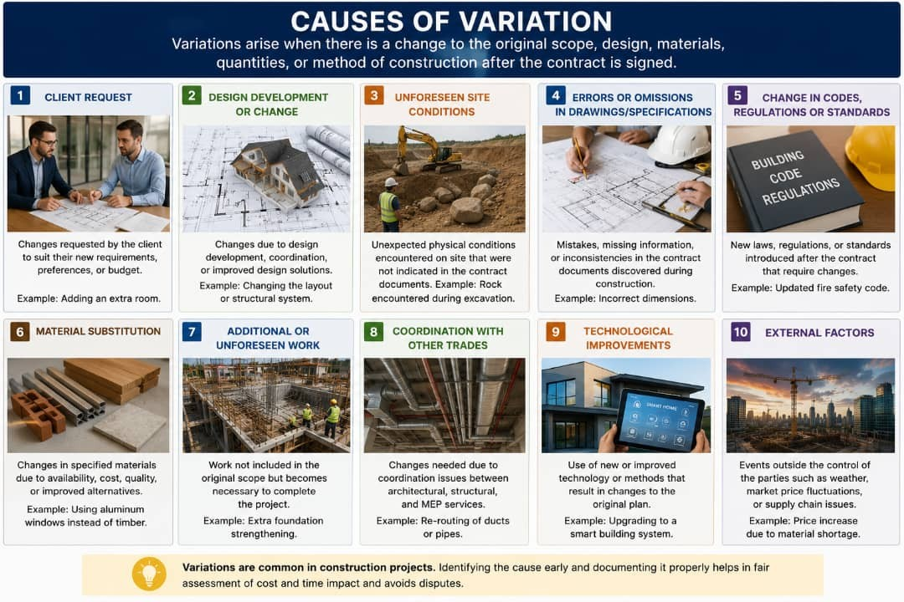
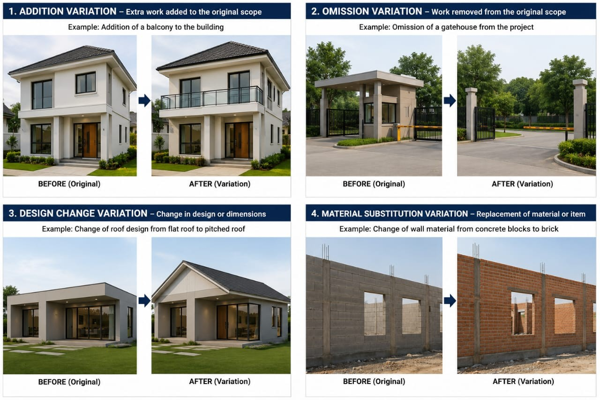

Introduction
Construction variation refers to any change made to the original scope, design, quantity, quality, or method of
work
specified in a construction contract after the project has commenced.

Causes of Construction Variation
- Changes in client requirements
- Design modifications
- Errors or omissions in drawings and specifications
- Unforeseen site conditions
- Changes in regulations or standards

Types of Construction Variation
- Addition Variation - Extra work added to the original contract.
- Omission Variation - Removal of work from the original scope.
- Design Change Variation - Changes to the design or specifications.
- Material Substitution Variation - Replacement of specified materials with alternative materials.
Effects of Construction Variation
- Increase or decrease in project cost
- Extension or reduction of project duration
- Changes in resource requirements
- Potential impact on project quality
Management of Construction Variation
- Proper documentation of changes
- Approval by relevant parties
- Cost and time evaluation
- Effective communication among stakeholders